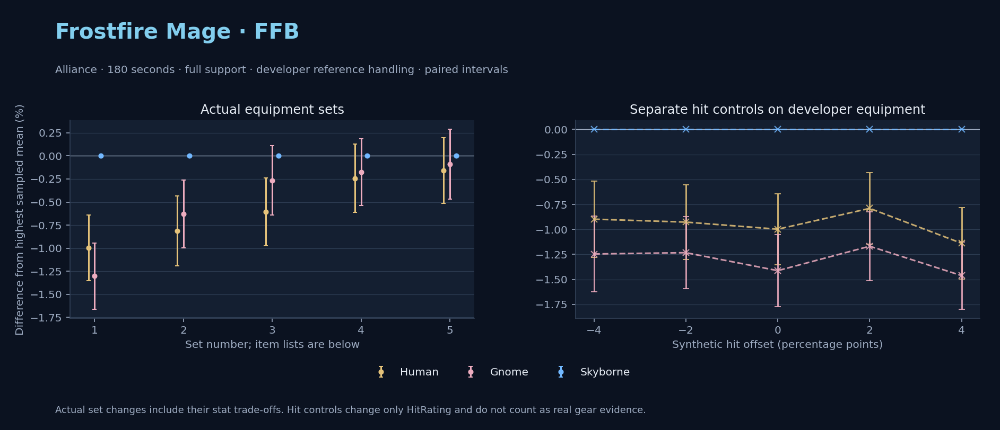

Alliance · Human / Gnome / Skyborne

No pet or guardian appears in the reference combat metrics. Reference: Human, developer equipment, 180 seconds and full support. Pet choices remain those of the developer build.
WoWSims developer · P1 Arcane
Unimplemented enchant or active set effects: [{"id": 181, "pieces": 2, "effects": ["+8 All Resistances."]}, {"id": 181, "pieces": 4, "effects": ["When struck in combat has a 2% chance of freezing the attacker in place for 3s. Can only occur once every 60 sec."]}]
180 seconds, full support and original developer references. Hit below is generic sheet melee / spell hit; school and talent bonuses can be attached directly to spells.
| Race | DPS | Gap and interval | Generic hit | Replay |
|---|---|---|---|---|
| Skyborne | 782.63 | +0.000% ± 0.000 | 2.9% / 2.9% | Native input · Website JSON |
| Human | 774.82 | -0.998% ± 0.356 | 2.9% / 2.9% | Native input · Website JSON |
| Gnome | 772.45 | -1.301% ± 0.360 | 2.9% / 2.9% | Native input · Website JSON |
| Slot | Item | ID | Enchant |
|---|---|---|---|
| Head | Magister's Crown | 16686 | |
| Neck | Gem of Trapped Innocents | 23057 | |
| Shoulder | Sorcerer's Mantle | 226936 | |
| Back | Drape of Vaulted Secrets | 21415 | |
| Chest | Magister's Robes | 16688 | |
| Wrist | Magister's Bindings | 16683 | |
| Hands | Magister's Gloves | 16684 | |
| Waist | Magister's Belt | 16685 | |
| Legs | Magister's Leggings | 16687 | |
| Feet | Magister's Boots | 16682 | |
| Ring 1 | Brilliant Watcher's Signet | 275982 | |
| Ring 2 | Ring of Entropy | 18543 | |
| Trinket 1 | Talisman of Ephemeral Power | 18820 | |
| Trinket 2 | Neltharion's Tear | 19379 | |
| Main hand | Grand Marshal's Mageblade | 23451 | |
| Off hand | Master Dragonslayer's Orb | 19366 | |
| Ranged / relic | Torch of Light | 279246 |
Published ranked alternatives · Published pre-raid
Recorded source replacements: [{"slot": "ranged", "from": 11748, "to": 7513, "publishedAlternativeRank": 1, "publishedEpDelta": -3.6, "reason": "First published alternative compatible with the current WoWSims database, class, faction and occupied slots."}]
180 seconds, full support and original developer references. Hit below is generic sheet melee / spell hit; school and talent bonuses can be attached directly to spells.
| Race | DPS | Gap and interval | Generic hit | Replay |
|---|---|---|---|---|
| Skyborne | 818.21 | +0.000% ± 0.000 | 3.0% / 3.0% | Native input · Website JSON |
| Gnome | 813.07 | -0.629% ± 0.369 | 3.0% / 3.0% | Native input · Website JSON |
| Human | 811.57 | -0.812% ± 0.377 | 3.0% / 3.0% | Native input · Website JSON |
| Slot | Item | ID | Enchant |
|---|---|---|---|
| Head | Sorcerer's Crown | 226935 | Arcanum of Focus |
| Neck | Archlight Talisman | 15856 | Enchant Necklace - Spell Power |
| Shoulder | Mantle of the Timbermaw | 19050 | |
| Back | Arcanoweave Cloak | 272411 | |
| Chest | Sorcerer's Robes | 226932 | Mystic Rugged Armor Kit |
| Wrist | Runecloth Cuffs | 254123 | Enchant Bracer - Greater Spellpower |
| Hands | Gloves of Spell Mastery | 14146 | Enchant Gloves - Minor Haste |
| Waist | Belt of the Archmage | 18405 | |
| Legs | Cindercloth Pants | 14045 | Arcanum of Focus |
| Feet | Sorcerer's Sandals | 226931 | Mystic Rugged Armor Kit |
| Ring 1 | Blessed Band of Light | 272407 | |
| Ring 2 | Maiden's Circle | 13001 | |
| Trinket 1 | Weakness Analyzer | 272438 | |
| Trinket 2 | Uther's Strength | 11302 | |
| Main hand | Sageblade | 22383 | |
| Off hand | Spirit of Aquementas | 11904 | Enchant Off-Hand - Superior Intellect |
| Ranged / relic | Ragefire Wand | 7513 |
Published one-slot hit alternative · Published pre-raid
One source-listed alternative; at least 80% of the source slot score retained. Reported hit selects the contrast; only native stats determine simulation outcomes. This is an experimental combination, not an endorsed best set.
Recorded source replacements: [{"slot": "ranged", "from": 11748, "to": 7513, "publishedAlternativeRank": 1, "publishedEpDelta": -3.6, "reason": "First published alternative compatible with the current WoWSims database, class, faction and occupied slots."}]
180 seconds, full support and original developer references. Hit below is generic sheet melee / spell hit; school and talent bonuses can be attached directly to spells.
| Race | DPS | Gap and interval | Generic hit | Replay |
|---|---|---|---|---|
| Skyborne | 816.91 | +0.000% ± 0.000 | 4.0% / 4.0% | Native input · Website JSON |
| Gnome | 814.74 | -0.265% ± 0.374 | 4.0% / 4.0% | Native input · Website JSON |
| Human | 811.95 | -0.607% ± 0.369 | 4.0% / 4.0% | Native input · Website JSON |
| Slot | Item | ID | Enchant |
|---|---|---|---|
| Head | Sorcerer's Crown | 226935 | Arcanum of Focus |
| Neck | Archlight Talisman | 15856 | Enchant Necklace - Spell Power |
| Shoulder | Mantle of the Timbermaw | 19050 | |
| Back | Arcanoweave Cloak | 272411 | |
| Chest | Sorcerer's Robes | 226932 | Mystic Rugged Armor Kit |
| Wrist | Runecloth Cuffs | 254123 | Enchant Bracer - Greater Spellpower |
| Hands | Gloves of Spell Mastery | 14146 | Enchant Gloves - Minor Haste |
| Waist | Belt of the Archmage | 18405 | |
| Legs | Cindercloth Pants | 14045 | Arcanum of Focus |
| Feet | Sorcerer's Sandals | 226931 | Mystic Rugged Armor Kit |
| Ring 1 | Blessed Band of Light | 272407 | |
| Ring 2 | Channeler's Ring | 272406 | |
| Trinket 1 | Weakness Analyzer | 272438 | |
| Trinket 2 | Uther's Strength | 11302 | |
| Main hand | Sageblade | 22383 | |
| Off hand | Spirit of Aquementas | 11904 | Enchant Off-Hand - Superior Intellect |
| Ranged / relic | Ragefire Wand | 7513 |
Published ranked alternatives · Published pre-raid
Recorded source replacements: [{"slot": "shoulder", "from": 227808, "to": 19050, "publishedAlternativeRank": 1, "publishedEpDelta": -10.4, "reason": "First published alternative compatible with the current WoWSims database, class, faction and occupied slots."}, {"slot": "waist", "from": 228190, "to": 18405, "publishedAlternativeRank": 1, "publishedEpDelta": -9.2, "reason": "First published alternative compatible with the current WoWSims database, class, faction and occupied slots."}, {"slot": "ranged", "from": 11748, "to": 249385, "publishedAlternativeRank": 1, "publishedEpDelta": -2.8, "reason": "First published alternative compatible with the current WoWSims database, class, faction and occupied slots."}]
180 seconds, full support and original developer references. Hit below is generic sheet melee / spell hit; school and talent bonuses can be attached directly to spells.
| Race | DPS | Gap and interval | Generic hit | Replay |
|---|---|---|---|---|
| Skyborne | 841.67 | +0.000% ± 0.000 | 3.9% / 3.9% | Native input · Website JSON |
| Gnome | 840.17 | -0.178% ± 0.362 | 3.9% / 3.9% | Native input · Website JSON |
| Human | 839.62 | -0.243% ± 0.370 | 3.9% / 3.9% | Native input · Website JSON |
| Slot | Item | ID | Enchant |
|---|---|---|---|
| Head | Sorcerer's Crown | 226935 | Arcanum of Focus |
| Neck | Archlight Talisman | 15856 | Enchant Necklace - Spell Power |
| Shoulder | Mantle of the Timbermaw | 19050 | |
| Back | Arcanoweave Cloak | 272411 | |
| Chest | Robe of the Archmage | 14152 | Mystic Rugged Armor Kit |
| Wrist | Netherflame Cuffs | 254065 | Enchant Bracer - Greater Spellpower |
| Hands | Gloves of Spell Mastery | 14146 | Enchant Gloves - Minor Haste |
| Waist | Belt of the Archmage | 18405 | |
| Legs | Cindercloth Pants | 14045 | Arcanum of Focus |
| Feet | Sorcerer's Sandals | 226931 | Mystic Rugged Armor Kit |
| Ring 1 | Blessed Band of Light | 272407 | |
| Ring 2 | Maiden's Circle | 13001 | |
| Trinket 1 | Weakness Analyzer | 272438 | |
| Trinket 2 | Frozen Heart of the Mountain | 249469 | |
| Main hand | Sageblade | 22383 | |
| Off hand | Spirit of Aquementas | 11904 | Enchant Off-Hand - Superior Intellect |
| Ranged / relic | Brilliant Wand | 249385 |
Published one-slot hit alternative · Published pre-raid
One source-listed alternative; at least 80% of the source slot score retained. Reported hit selects the contrast; only native stats determine simulation outcomes. This is an experimental combination, not an endorsed best set.
Recorded source replacements: [{"slot": "shoulder", "from": 227808, "to": 19050, "publishedAlternativeRank": 1, "publishedEpDelta": -10.4, "reason": "First published alternative compatible with the current WoWSims database, class, faction and occupied slots."}, {"slot": "waist", "from": 228190, "to": 18405, "publishedAlternativeRank": 1, "publishedEpDelta": -9.2, "reason": "First published alternative compatible with the current WoWSims database, class, faction and occupied slots."}, {"slot": "ranged", "from": 11748, "to": 249385, "publishedAlternativeRank": 1, "publishedEpDelta": -2.8, "reason": "First published alternative compatible with the current WoWSims database, class, faction and occupied slots."}]
180 seconds, full support and original developer references. Hit below is generic sheet melee / spell hit; school and talent bonuses can be attached directly to spells.
| Race | DPS | Gap and interval | Generic hit | Replay |
|---|---|---|---|---|
| Skyborne | 842.12 | +0.000% ± 0.000 | 4.9% / 4.9% | Native input · Website JSON |
| Gnome | 841.36 | -0.091% ± 0.378 | 4.9% / 4.9% | Native input · Website JSON |
| Human | 840.78 | -0.159% ± 0.356 | 4.9% / 4.9% | Native input · Website JSON |
| Slot | Item | ID | Enchant |
|---|---|---|---|
| Head | Sorcerer's Crown | 226935 | Arcanum of Focus |
| Neck | Archlight Talisman | 15856 | Enchant Necklace - Spell Power |
| Shoulder | Mantle of the Timbermaw | 19050 | |
| Back | Arcanoweave Cloak | 272411 | |
| Chest | Robe of the Archmage | 14152 | Mystic Rugged Armor Kit |
| Wrist | Netherflame Cuffs | 254065 | Enchant Bracer - Greater Spellpower |
| Hands | Gloves of Spell Mastery | 14146 | Enchant Gloves - Minor Haste |
| Waist | Belt of the Archmage | 18405 | |
| Legs | Cindercloth Pants | 14045 | Arcanum of Focus |
| Feet | Sorcerer's Sandals | 226931 | Mystic Rugged Armor Kit |
| Ring 1 | Blessed Band of Light | 272407 | |
| Ring 2 | Channeler's Ring | 272406 | |
| Trinket 1 | Weakness Analyzer | 272438 | |
| Trinket 2 | Frozen Heart of the Mountain | 249469 | |
| Main hand | Sageblade | 22383 | |
| Off hand | Spirit of Aquementas | 11904 | Enchant Off-Hand - Superior Intellect |
| Ranged / relic | Brilliant Wand | 249385 |
The same declared pool is available to every race. Each race keeps its best validation-sample set with its screening-selected racial policy. Separate samples confirm that choice, with fresh precision samples near the practical-loss boundary. Gaps use the highest sampled mean under that same duration, support and reference treatment as their reference. A zero reference gap does not certify a race; the main matrix also allows uncertainty in the leader.
| Pool | Seconds | Support | References | Race | DPS | Gap and interval | Racial policies / mana | Selected set | Generic hit: melee / spell | Replay |
|---|---|---|---|---|---|---|---|---|---|---|
| published-pre-raid | 60 | full | developer | Skyborne | 869.56 | +0.000% ± 0.00020,000 iterations | developer / developer / developerMana waits 0.0s | published-mage-frostfire-alliance-dfa7b9dbfe8c36b8-higher-hit | 4.9% / 4.9% | Input · Result · Stats |
| published-pre-raid | 60 | full | developer | Gnome | 865.75 | -0.438% ± 0.07820,000 iterations | developer / developer / developerMana waits 0.0s | published-mage-frostfire-alliance-dfa7b9dbfe8c36b8-higher-hit | 4.9% / 4.9% | Input · Result · Stats |
| published-pre-raid | 60 | full | developer | Human | 863.60 | -0.685% ± 0.10620,000 iterations | developer / developer / developerMana waits 0.0s | published-mage-frostfire-alliance-dfa7b9dbfe8c36b8 | 3.9% / 3.9% | Input · Result · Stats |
| published-pre-raid | 60 | full | explicit | Skyborne | 869.56 | +0.000% ± 0.00020,000 iterations | developer / developer / developerMana waits 0.0s | published-mage-frostfire-alliance-dfa7b9dbfe8c36b8-higher-hit | 4.9% / 4.9% | Input · Result · Stats |
| published-pre-raid | 60 | full | explicit | Gnome | 865.75 | -0.438% ± 0.07820,000 iterations | developer / developer / developerMana waits 0.0s | published-mage-frostfire-alliance-dfa7b9dbfe8c36b8-higher-hit | 4.9% / 4.9% | Input · Result · Stats |
| published-pre-raid | 60 | full | explicit | Human | 863.60 | -0.685% ± 0.10620,000 iterations | developer / developer / developerMana waits 0.0s | published-mage-frostfire-alliance-dfa7b9dbfe8c36b8 | 3.9% / 3.9% | Input · Result · Stats |
| published-pre-raid | 60 | self | developer | Skyborne | 759.87 | +0.000% ± 0.00020,000 iterations | developer / developer / developerMana waits 0.0s | published-mage-frostfire-alliance-dfa7b9dbfe8c36b8-higher-hit | 4.9% / 4.9% | Input · Result · Stats |
| published-pre-raid | 60 | self | developer | Gnome | 756.54 | -0.438% ± 0.07720,000 iterations | developer / developer / developerMana waits 0.0s | published-mage-frostfire-alliance-dfa7b9dbfe8c36b8-higher-hit | 4.9% / 4.9% | Input · Result · Stats |
| published-pre-raid | 60 | self | developer | Human | 754.29 | -0.734% ± 0.08820,000 iterations | developer / developer / developerMana waits 0.0s | published-mage-frostfire-alliance-dfa7b9dbfe8c36b8-higher-hit | 4.9% / 4.9% | Input · Result · Stats |
| published-pre-raid | 60 | self | explicit | Skyborne | 759.87 | +0.000% ± 0.00020,000 iterations | developer / developer / developerMana waits 0.0s | published-mage-frostfire-alliance-dfa7b9dbfe8c36b8-higher-hit | 4.9% / 4.9% | Input · Result · Stats |
| published-pre-raid | 60 | self | explicit | Gnome | 756.54 | -0.438% ± 0.07720,000 iterations | developer / developer / developerMana waits 0.0s | published-mage-frostfire-alliance-dfa7b9dbfe8c36b8-higher-hit | 4.9% / 4.9% | Input · Result · Stats |
| published-pre-raid | 60 | self | explicit | Human | 754.29 | -0.734% ± 0.08820,000 iterations | developer / developer / developerMana waits 0.0s | published-mage-frostfire-alliance-dfa7b9dbfe8c36b8-higher-hit | 4.9% / 4.9% | Input · Result · Stats |
| published-pre-raid | 180 | full | developer | Skyborne | 841.85 | +0.000% ± 0.00020,000 iterations | developer / developer / developerMana waits 1.1s | published-mage-frostfire-alliance-dfa7b9dbfe8c36b8-higher-hit | 4.9% / 4.9% | Input · Result · Stats · Website JSON |
| published-pre-raid | 180 | full | developer | Gnome | 839.07 | -0.330% ± 0.08020,000 iterations | developer / developer / developerMana waits 0.9s | published-mage-frostfire-alliance-dfa7b9dbfe8c36b8-higher-hit | 4.9% / 4.9% | Input · Result · Stats · Website JSON |
| published-pre-raid | 180 | full | developer | Human | 837.61 | -0.504% ± 0.08020,000 iterations | developer / developer / developerMana waits 0.6s | published-mage-frostfire-alliance-dfa7b9dbfe8c36b8-higher-hit | 4.9% / 4.9% | Input · Result · Stats · Website JSON |
| published-pre-raid | 180 | full | explicit | Skyborne | 841.85 | +0.000% ± 0.00020,000 iterations | developer / developer / developerMana waits 1.1s | published-mage-frostfire-alliance-dfa7b9dbfe8c36b8-higher-hit | 4.9% / 4.9% | Input · Result · Stats |
| published-pre-raid | 180 | full | explicit | Gnome | 839.07 | -0.330% ± 0.08020,000 iterations | developer / developer / developerMana waits 0.9s | published-mage-frostfire-alliance-dfa7b9dbfe8c36b8-higher-hit | 4.9% / 4.9% | Input · Result · Stats |
| published-pre-raid | 180 | full | explicit | Human | 837.61 | -0.504% ± 0.08020,000 iterations | developer / developer / developerMana waits 0.6s | published-mage-frostfire-alliance-dfa7b9dbfe8c36b8-higher-hit | 4.9% / 4.9% | Input · Result · Stats |
| published-pre-raid | 180 | self | developer | Skyborne | 560.18 | +0.000% ± 0.0005,000 iterations | developer / developer / developerMana waits 45.1s | published-mage-frostfire-alliance-dfa7b9dbfe8c36b8-higher-hit | 4.9% / 4.9% | Input · Result · Stats |
| published-pre-raid | 180 | self | developer | Human | 535.76 | -4.358% ± 0.1985,000 iterations | developer / developer / developerMana waits 52.3s | published-mage-frostfire-alliance-dfa7b9dbfe8c36b8-higher-hit | 4.9% / 4.9% | Input · Result · Stats |
| published-pre-raid | 180 | self | developer | Gnome | 534.05 | -4.663% ± 0.2135,000 iterations | developer / developer / developerMana waits 51.7s | published-mage-frostfire-alliance-dfa7b9dbfe8c36b8-higher-hit | 4.9% / 4.9% | Input · Result · Stats |
| published-pre-raid | 180 | self | explicit | Skyborne | 560.18 | +0.000% ± 0.0005,000 iterations | developer / developer / developerMana waits 45.1s | published-mage-frostfire-alliance-dfa7b9dbfe8c36b8-higher-hit | 4.9% / 4.9% | Input · Result · Stats |
| published-pre-raid | 180 | self | explicit | Human | 535.76 | -4.358% ± 0.1985,000 iterations | developer / developer / developerMana waits 52.3s | published-mage-frostfire-alliance-dfa7b9dbfe8c36b8-higher-hit | 4.9% / 4.9% | Input · Result · Stats |
| published-pre-raid | 180 | self | explicit | Gnome | 534.05 | -4.663% ± 0.2135,000 iterations | developer / developer / developerMana waits 51.7s | published-mage-frostfire-alliance-dfa7b9dbfe8c36b8-higher-hit | 4.9% / 4.9% | Input · Result · Stats |
| published-pre-raid | 300 | full | developer | Skyborne | 674.03 | +0.000% ± 0.00020,000 iterations | developer / developer / developerMana waits 86.0s | published-mage-frostfire-alliance-dfa7b9dbfe8c36b8-higher-hit | 4.9% / 4.9% | Input · Result · Stats |
| published-pre-raid | 300 | full | developer | Human | 673.26 | -0.115% ± 0.08020,000 iterations | developer / developer / developerMana waits 86.8s | published-mage-frostfire-alliance-dfa7b9dbfe8c36b8-higher-hit | 4.9% / 4.9% | Input · Result · Stats |
| published-pre-raid | 300 | full | developer | Gnome | 667.08 | -1.031% ± 0.07920,000 iterations | developer / developer / developerMana waits 88.7s | published-mage-frostfire-alliance-dfa7b9dbfe8c36b8-higher-hit | 4.9% / 4.9% | Input · Result · Stats |
| published-pre-raid | 300 | full | explicit | Skyborne | 674.03 | +0.000% ± 0.00020,000 iterations | developer / developer / developerMana waits 86.0s | published-mage-frostfire-alliance-dfa7b9dbfe8c36b8-higher-hit | 4.9% / 4.9% | Input · Result · Stats |
| published-pre-raid | 300 | full | explicit | Human | 673.26 | -0.115% ± 0.08020,000 iterations | developer / developer / developerMana waits 86.8s | published-mage-frostfire-alliance-dfa7b9dbfe8c36b8-higher-hit | 4.9% / 4.9% | Input · Result · Stats |
| published-pre-raid | 300 | full | explicit | Gnome | 667.08 | -1.031% ± 0.07920,000 iterations | developer / developer / developerMana waits 88.7s | published-mage-frostfire-alliance-dfa7b9dbfe8c36b8-higher-hit | 4.9% / 4.9% | Input · Result · Stats |
| published-pre-raid | 300 | self | developer | Skyborne | 421.58 | +0.000% ± 0.0005,000 iterations | developer / developer / developerMana waits 138.9s | published-mage-frostfire-alliance-dfa7b9dbfe8c36b8-higher-hit | 4.9% / 4.9% | Input · Result · Stats |
| published-pre-raid | 300 | self | developer | Human | 408.88 | -3.014% ± 0.2055,000 iterations | developer / developer / developerMana waits 148.3s | published-mage-frostfire-alliance-dfa7b9dbfe8c36b8-higher-hit | 4.9% / 4.9% | Input · Result · Stats |
| published-pre-raid | 300 | self | developer | Gnome | 403.08 | -4.388% ± 0.2205,000 iterations | developer / developer / developerMana waits 145.9s | published-mage-frostfire-alliance-dfa7b9dbfe8c36b8-higher-hit | 4.9% / 4.9% | Input · Result · Stats |
| published-pre-raid | 300 | self | explicit | Skyborne | 421.58 | +0.000% ± 0.0005,000 iterations | developer / developer / developerMana waits 138.9s | published-mage-frostfire-alliance-dfa7b9dbfe8c36b8-higher-hit | 4.9% / 4.9% | Input · Result · Stats |
| published-pre-raid | 300 | self | explicit | Human | 408.88 | -3.014% ± 0.2055,000 iterations | developer / developer / developerMana waits 148.3s | published-mage-frostfire-alliance-dfa7b9dbfe8c36b8-higher-hit | 4.9% / 4.9% | Input · Result · Stats |
| published-pre-raid | 300 | self | explicit | Gnome | 403.08 | -4.388% ± 0.2205,000 iterations | developer / developer / developerMana waits 145.9s | published-mage-frostfire-alliance-dfa7b9dbfe8c36b8-higher-hit | 4.9% / 4.9% | Input · Result · Stats |
| developer-reference | 60 | full | developer | Skyborne | 804.62 | +0.000% ± 0.00020,000 iterations | developer / developer / developerMana waits 0.0s | developer | 2.9% / 2.9% | Input · Result · Stats |
| developer-reference | 60 | full | developer | Gnome | 800.64 | -0.494% ± 0.09420,000 iterations | developer / developer / developerMana waits 0.0s | developer | 2.9% / 2.9% | Input · Result · Stats |
| developer-reference | 60 | full | developer | Human | 797.87 | -0.839% ± 0.10220,000 iterations | developer / developer / developerMana waits 0.0s | developer | 2.9% / 2.9% | Input · Result · Stats |
| developer-reference | 60 | full | explicit | Skyborne | 804.62 | +0.000% ± 0.00020,000 iterations | developer / developer / developerMana waits 0.0s | developer | 2.9% / 2.9% | Input · Result · Stats |
| developer-reference | 60 | full | explicit | Gnome | 800.64 | -0.494% ± 0.09420,000 iterations | developer / developer / developerMana waits 0.0s | developer | 2.9% / 2.9% | Input · Result · Stats |
| developer-reference | 60 | full | explicit | Human | 797.87 | -0.839% ± 0.10220,000 iterations | developer / developer / developerMana waits 0.0s | developer | 2.9% / 2.9% | Input · Result · Stats |
| developer-reference | 60 | self | developer | Skyborne | 702.17 | +0.000% ± 0.00020,000 iterations | developer / developer / developerMana waits 0.0s | developer | 2.9% / 2.9% | Input · Result · Stats |
| developer-reference | 60 | self | developer | Gnome | 699.12 | -0.434% ± 0.09120,000 iterations | developer / developer / developerMana waits 0.0s | developer | 2.9% / 2.9% | Input · Result · Stats |
| developer-reference | 60 | self | developer | Human | 696.92 | -0.748% ± 0.09920,000 iterations | developer / developer / developerMana waits 0.0s | developer | 2.9% / 2.9% | Input · Result · Stats |
| developer-reference | 60 | self | explicit | Skyborne | 702.17 | +0.000% ± 0.00020,000 iterations | developer / developer / developerMana waits 0.0s | developer | 2.9% / 2.9% | Input · Result · Stats |
| developer-reference | 60 | self | explicit | Gnome | 699.12 | -0.434% ± 0.09120,000 iterations | developer / developer / developerMana waits 0.0s | developer | 2.9% / 2.9% | Input · Result · Stats |
| developer-reference | 60 | self | explicit | Human | 696.92 | -0.748% ± 0.09920,000 iterations | developer / developer / developerMana waits 0.0s | developer | 2.9% / 2.9% | Input · Result · Stats |
| developer-reference | 180 | full | developer | Skyborne | 781.48 | +0.000% ± 0.00020,000 iterations | developer / developer / developerMana waits 0.0s | developer | 2.9% / 2.9% | Input · Result · Stats · Website JSON |
| developer-reference | 180 | full | developer | Human | 773.32 | -1.044% ± 0.08220,000 iterations | developer / developer / developerMana waits 0.0s | developer | 2.9% / 2.9% | Input · Result · Stats · Website JSON |
| developer-reference | 180 | full | developer | Gnome | 771.53 | -1.273% ± 0.08020,000 iterations | developer / developer / developerMana waits 0.0s | developer | 2.9% / 2.9% | Input · Result · Stats · Website JSON |
| developer-reference | 180 | full | explicit | Skyborne | 781.48 | +0.000% ± 0.00020,000 iterations | developer / developer / developerMana waits 0.0s | developer | 2.9% / 2.9% | Input · Result · Stats |
| developer-reference | 180 | full | explicit | Human | 773.32 | -1.044% ± 0.08220,000 iterations | developer / developer / developerMana waits 0.0s | developer | 2.9% / 2.9% | Input · Result · Stats |
| developer-reference | 180 | full | explicit | Gnome | 771.53 | -1.273% ± 0.08020,000 iterations | developer / developer / developerMana waits 0.0s | developer | 2.9% / 2.9% | Input · Result · Stats |
| developer-reference | 180 | self | developer | Skyborne | 578.49 | +0.000% ± 0.0005,000 iterations | developer / developer / developerMana waits 31.7s | developer | 2.9% / 2.9% | Input · Result · Stats |
| developer-reference | 180 | self | developer | Human | 570.10 | -1.450% ± 0.1905,000 iterations | developer / developer / developerMana waits 34.4s | developer | 2.9% / 2.9% | Input · Result · Stats |
| developer-reference | 180 | self | developer | Gnome | 567.01 | -1.984% ± 0.1935,000 iterations | developer / developer / developerMana waits 34.6s | developer | 2.9% / 2.9% | Input · Result · Stats |
| developer-reference | 180 | self | explicit | Skyborne | 578.49 | +0.000% ± 0.0005,000 iterations | developer / developer / developerMana waits 31.7s | developer | 2.9% / 2.9% | Input · Result · Stats |
| developer-reference | 180 | self | explicit | Human | 570.10 | -1.450% ± 0.1905,000 iterations | developer / developer / developerMana waits 34.4s | developer | 2.9% / 2.9% | Input · Result · Stats |
| developer-reference | 180 | self | explicit | Gnome | 567.01 | -1.984% ± 0.1935,000 iterations | developer / developer / developerMana waits 34.6s | developer | 2.9% / 2.9% | Input · Result · Stats |
| developer-reference | 300 | full | developer | Human | 695.93 | +0.000% ± 0.00020,000 iterations | developer / developer / developerMana waits 54.8s | developer | 2.9% / 2.9% | Input · Result · Stats |
| developer-reference | 300 | full | developer | Skyborne | 690.29 | -0.810% ± 0.07920,000 iterations | developer / developer / developerMana waits 59.3s | developer | 2.9% / 2.9% | Input · Result · Stats |
| developer-reference | 300 | full | developer | Gnome | 690.02 | -0.849% ± 0.06820,000 iterations | developer / developer / developerMana waits 56.0s | developer | 2.9% / 2.9% | Input · Result · Stats |
| developer-reference | 300 | full | explicit | Human | 695.93 | +0.000% ± 0.00020,000 iterations | developer / developer / developerMana waits 54.8s | developer | 2.9% / 2.9% | Input · Result · Stats |
| developer-reference | 300 | full | explicit | Skyborne | 690.29 | -0.810% ± 0.07920,000 iterations | developer / developer / developerMana waits 59.3s | developer | 2.9% / 2.9% | Input · Result · Stats |
| developer-reference | 300 | full | explicit | Gnome | 690.02 | -0.849% ± 0.06820,000 iterations | developer / developer / developerMana waits 56.0s | developer | 2.9% / 2.9% | Input · Result · Stats |
| developer-reference | 300 | self | developer | Skyborne | 441.59 | +0.000% ± 0.0005,000 iterations | developer / developer / developerMana waits 123.4s | developer | 2.9% / 2.9% | Input · Result · Stats |
| developer-reference | 300 | self | developer | Human | 438.08 | -0.795% ± 0.1895,000 iterations | developer / developer / developerMana waits 127.9s | developer | 2.9% / 2.9% | Input · Result · Stats |
| developer-reference | 300 | self | developer | Gnome | 433.61 | -1.808% ± 0.1915,000 iterations | developer / developer / developerMana waits 127.4s | developer | 2.9% / 2.9% | Input · Result · Stats |
| developer-reference | 300 | self | explicit | Skyborne | 441.59 | +0.000% ± 0.0005,000 iterations | developer / developer / developerMana waits 123.4s | developer | 2.9% / 2.9% | Input · Result · Stats |
| developer-reference | 300 | self | explicit | Human | 438.08 | -0.795% ± 0.1895,000 iterations | developer / developer / developerMana waits 127.9s | developer | 2.9% / 2.9% | Input · Result · Stats |
| developer-reference | 300 | self | explicit | Gnome | 433.61 | -1.808% ± 0.1915,000 iterations | developer / developer / developerMana waits 127.4s | developer | 2.9% / 2.9% | Input · Result · Stats |
180 seconds, full support and the developer equipment anchor. These checks test creature sensitivity without a full gear search.
| Target | References | Race | DPS | Gap and interval | Replay |
|---|---|---|---|---|---|
| beast | developer | Skyborne | 782.63 | +0.000% ± 0.000 | Input · Result |
| beast | developer | Human | 774.82 | -0.998% ± 0.356 | Input · Result |
| beast | developer | Gnome | 771.58 | -1.412% ± 0.360 | Input · Result |
| beast | explicit | Skyborne | 782.63 | +0.000% ± 0.000 | Input · Result |
| beast | explicit | Human | 774.82 | -0.998% ± 0.356 | Input · Result |
| beast | explicit | Gnome | 771.58 | -1.412% ± 0.360 | Input · Result |
| elemental | developer | Skyborne | 821.76 | +0.000% ± 0.000 | Input · Result |
| elemental | developer | Human | 774.82 | -5.712% ± 0.339 | Input · Result |
| elemental | developer | Gnome | 771.58 | -6.107% ± 0.342 | Input · Result |
| elemental | explicit | Skyborne | 821.76 | +0.000% ± 0.000 | Input · Result |
| elemental | explicit | Human | 774.82 | -5.712% ± 0.339 | Input · Result |
| elemental | explicit | Gnome | 771.58 | -6.107% ± 0.342 | Input · Result |
Some equipment has unimplemented enchant or set effects
These known-issue notes are source context. Runtime checks establish current cast coverage, including Mutilate. They do not prove every mechanic matches the game.